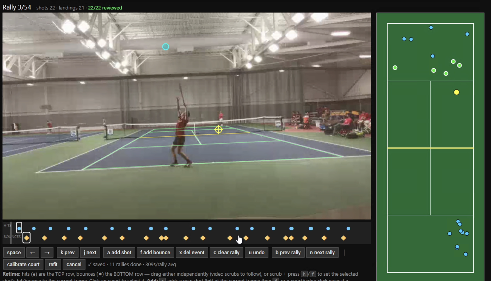
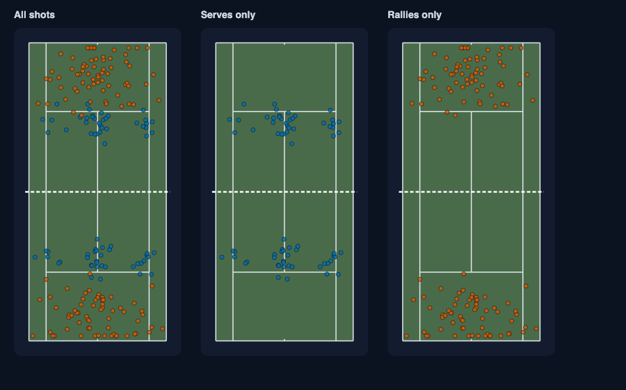
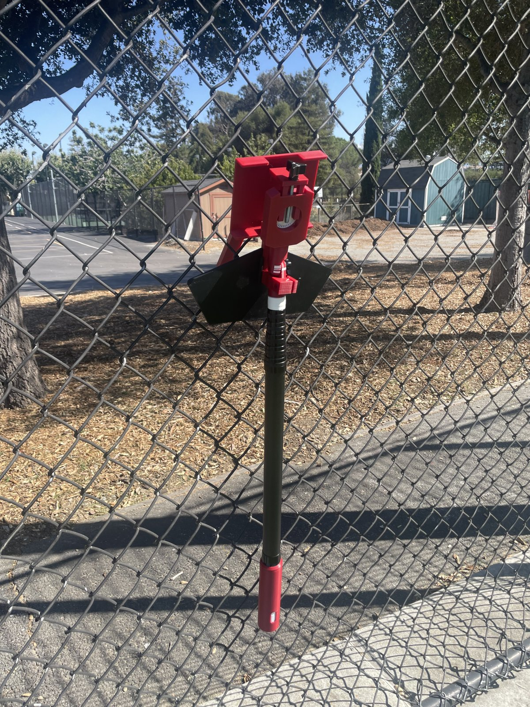
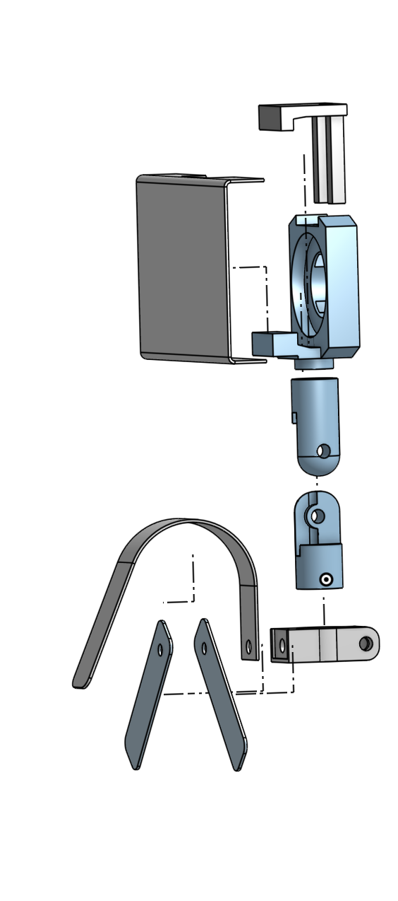
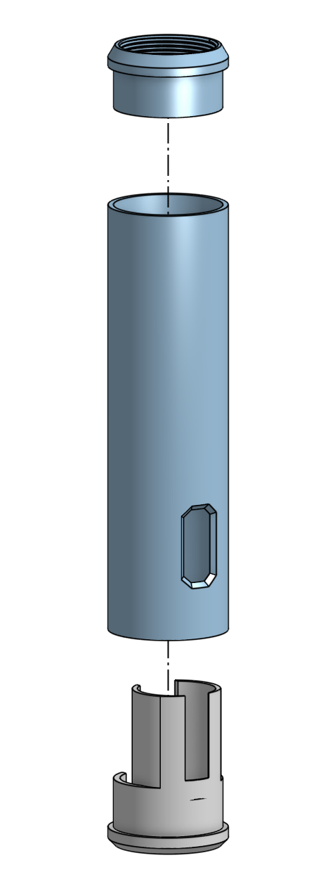

In summer 2026 I interned at SharpEye Performance, a startup building an AI tennis coaching app. Here is how each of my three projects went.
Computer Vision Tracking
Tracking the ball, players, and court
To build the computer vision system for scraping data from tennis matches, we started by tracking the ball, players, and court. The hardest piece was ball tracking, especially the far half of the court, where the ball is only a few pixels wide. We tried several out-of-the-box models and picked the one that tested the best on far-court tracking. Out of the box it still struggled in harder conditions, like playing nearly blind at night, so we fine-tuned it on our own labeled matches. That lifted far-court detection to about 74% on new venues and over 95% on footage close to our training data.
Detecting hits
Once the ball, players, and court were tracked reasonably accurately, we worked on identifying hits. We used a temporal convolutional network (TCN) built on player-pose and ball-motion features, because it reads a hit from the sequence of body movement across many frames rather than from a single image — and the player's pose stays visible even when the ball doesn't. A single-frame approach had already proven to be a dead end.
The far-court problem
Our biggest challenge was identifying far-court hits, where the players and ball are much smaller in the frame. Running the detector on the full frame meant the far player was barely picked up at all. To fix this, we ran the model on a zoomed-in crop of the far court so the far player and ball were large enough to read, which is what finally cracked far-court detection.
By the end of my internship, the hit detector reached an F1 score of roughly 0.80–0.83 on held-out matches — and up to about 0.89 on our standard camera setup — accurate enough to automatically draft a match's shots for a person to quickly correct.


Filming Stick
Players needed a way to film their own matches from a fixed, elevated angle, so I started by tearing down the camera mounts already on the market. The biggest recurring complaint was simple: to change the camera angle, you had to unclip the whole pole from the fence and re-mount it.
Designing around real parts
My first idea was a mount whose angle you could adjust from the bottom of the pole, without ever taking it down. I designed the custom parts in CAD around hardware I didn't control — a purchased phone clamp, charger, and pole — so every part had to fit real dimensions exactly. This pushed my CAD skills a long way.
Testing and simplifying
I prototyped that adjustable tilt using both pneumatic and hydraulic mechanisms, but testing showed both were too complex and expensive to design and manufacture in the time we had. That became a big learning moment for me: often, simpler is better. Instead of a moving tilt, we calculated the ideal height and camera angle and added markings on the pivot, so we could just tell users which setting to use — getting a good shot with far fewer adjustments.



Scoring Models & App
The models I made were meant to capture how a player performed in specific aspects of a match, not just whether they won or lost, which makes them far more useful by showing a player their real strengths and weaknesses. I built four ratings — Serve IQ, Return IQ, Rally DNA, and Clutch Factor — each comparing a player's match to what their skill level predicts, so they can hear something like "you served like a 16.2 today."
How the scores work
Using each player's rating (UTR) and their opponent's, I fit regressions on thousands of charted matches to estimate how a typical player at that level would perform. Each score is then how far above or below that expectation they actually played, measured in rating points.
Accounting for luck
A single match is a small sample, so a lot of the swing in any one performance is luck rather than skill. I measured exactly how much — for the clutch metric, roughly 90% of a match's pressure-point swing turned out to be noise — and scaled it out so the ratings don't overreact to one lucky or unlucky day. Where the signal was too thin to trust as a skill level, I kept the metric descriptive instead of pretending it measured ability.
Validating and shipping it
I checked the pressure-point logic against the app's existing definitions (over 99% agreement) and sanity-checked the scores on famous finals — for example, the model rated Alcaraz far more clutch than Sinner in the 2025 French Open final, and flagged a player who out-clutched her opponent and still lost. From there I connected the ratings to the app's match reports and built a shot map in the app.